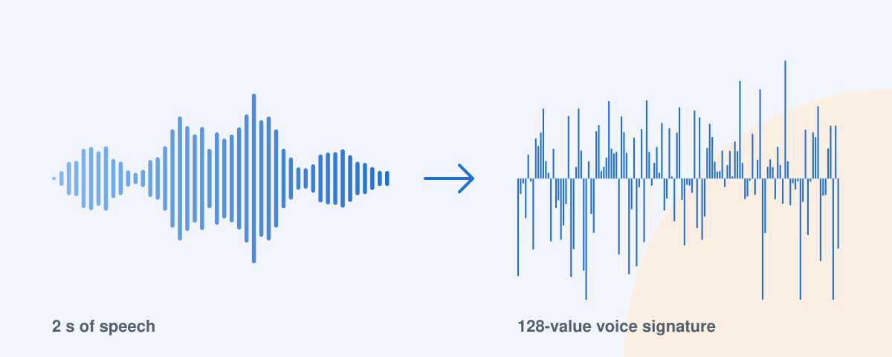

Voice Signature: On-Device Speaker Verification That Runs Fully in INT8

Voice Signature is a text-independent speaker verification (voice biometrics) system I built end to end, from collecting and cleaning the data to the final model running on a low-power edge AI processor. A user enrolls once by speaking for about 15 seconds; after that, a 3–4 second attempt is enough to confirm it is really them. The deployed model is fully INT8, about 273K parameters in a 327 KB file, and reaches 1.07% EER on 950 speakers it never saw during training.
What Is a Voice Signature?
Speaker verification answers one question: is this the person they claim to be? The model turns every 2-second window of speech into a list of 128 numbers, a speaker embedding (also called a voiceprint), that describes how a person sounds rather than what they say. Windows from the same person land close together; windows from different people land far apart.
At enrollment, the average of several embeddings becomes the user's stored voice signature. At verification, a new attempt is compared with that signature using cosine similarity, and the device accepts it if the score clears a threshold. Because it is text-independent, the user can say anything; there is no fixed passphrase to overhear.
- Speech data23,265 speakers
- Clean + auditduplicates, mixed, thin
- Features8 kHz, 40 log-mels, 2 s windows
- TrainTDNN-lite + AAM-softmax
- QAT + INT8327 KB TFLite
- Microphone8 kHz audio
- Same featuresVAD + log-mel
- INT8 model128-value embedding
- Comparecosine vs. stored signature
- Decideaccept if score ≥ threshold
Speaker Verification vs. Speaker Identification
Both are forms of speaker recognition, recognizing a person from their voice, but they answer different questions. Voice Signature is built for verification. Because it produces a general-purpose speaker embedding, the same voice signatures can also be used for identification by scoring an attempt against every enrolled signature and picking the best match above the threshold.
| Speaker verification | Speaker identification | |
|---|---|---|
| Question | Is this person who they claim to be? | Which enrolled person is speaking? |
| Comparison | 1 : 1, against one stored voice signature | 1 : N, against every stored signature |
| Output | Accept or reject | The best-matching person, or "unknown" |
| Typical use | Voice login, unlocking a device | Personalizing a shared device |
Data: 23,265 Speakers, Cleaned Before Training
The training set combines public speech corpora (in-the-wild video speech from VoxCeleb2 and VoxBlink2, read speech from LibriSpeech and Mozilla Common Voice, and Indian-language sets such as NISP, Kannada and Tamil) with a small set of recordings from the target hardware. That mix covers many accents, microphones and rooms, which is what a voice model needs to generalize.
Large public corpora are messy, so I audited them before training. Mistakes in speaker labels teach the model the wrong thing, and they also make evaluation look better or worse than it really is:
- Duplicate identities: the same person under two IDs, within or across corpora, found by voice-embedding similarity and quarantined.
- Mixed speakers: files that contain more than one voice.
- Thin speakers: too little speech; every speaker needs at least 3 files and 8 windows.
- Outlier files: a file whose voice is far from the rest of that speaker's files is dropped.
- Leakage checks: no speaker appears in more than one of the train, test and holdout sets, and test windows never come from a recording used for enrollment.
Features and Augmentation
Every recording goes through the same steps, offline and on the device:
- Resample to 8 kHz mono.
- Remove silence with Silero VAD, joining short gaps and dropping tiny fragments.
- Normalize the level to −21 dBFS, and reject recordings that are too quiet.
- Cut 2-second windows every second.
- Compute 40 log-mel bands, giving a 126 × 40 feature window.
To make the model robust, each clean window is stored with two augmented copies: office noise, music, babble and stationary noise at realistic signal-to-noise ratios, real room reverberation, and channel effects such as gain changes, telephone band-limiting and light clipping. SpecAugment masks a few frames and mel bands on top during training. Every accuracy number below, though, is measured on clean windows only, because that is what the deployed model sees.
Designing a Model the Chip Can Actually Run
The usual speaker-verification models, such as ECAPA-TDNN and ResNets, depend on residual connections, attention and statistics pooling. The target chip runs a fixed set of INT8 operators with a tight per-layer memory budget, so none of those were available. Every design had to be built only from convolutions, depthwise convolutions, fixed average pooling, reshapes and a final dense layer, all in INT8.
The final architecture is a TDNN-lite network: a small 2-D convolutional front end over time and frequency, followed by a depthwise time-delay body that treats the 40 mel bands as channels and convolves over time only. I compared five candidate designs on identical trials; this one gave the best accuracy among the models that fit in the device's memory.
Lesson: passing the memory rule on paper wasn't enough. One design fit the per-layer heap check but still hung on the device, because the real working set is the layer's input, output and im2col buffer together. Measuring that working set explained the failure and led to the final, slimmer front end.
Training: AAM-Softmax Over 23,265 Speakers
The network is trained as a 23,265-way speaker classifier with an AAM-softmax (additive angular margin) loss, which pushes each speaker's embeddings into a tight cluster with a clear margin from everyone else. After training, the classifier head is removed and the 128-value embedding layer becomes the voice signature. The best epoch is chosen by verification EER on 500 development speakers, kept separate from the 950 test speakers used for the headline number.
Two details made a big difference. First, ramping the angular margin up over the first epochs: with the full margin from the start, the small network stalled at near-zero accuracy. Second, the learning-rate schedule: each learning-rate cut produced an immediate drop in EER, and a cosine schedule avoided hours spent on plateaus.
INT8: Why Quantization-Aware Training Was Essential
Converting a trained float model to INT8 after training, the usual quick route, lost up to 4 points of EER on these depthwise models. No single layer was broken: every layer added a little rounding noise, and it accumulated over a dozen convolutions until the embedding no longer matched the float one. Calibrating on more data didn't fix it.
Quantization-aware training (QAT) did. The model is fine-tuned with simulated INT8 rounding in the loop, so it learns weights that survive quantization, and only then exported to a fully INT8 TFLite file: INT8 input, weights, activations and output, with no float operations at the edges.
Show the data as a table
| Model | Float | Plain INT8 | QAT INT8 |
|---|---|---|---|
| Earlier on-device model | 2.24% | 6.40% | 2.47% |
| Final model | 1.99% | 2.36% | 2.29% |
Results
Every model was scored on speakers it never trained on, using clean windows only, and models were compared on identical trials: 17,774 genuine and 16.9 million impostor trials across 950 test speakers. The final INT8 model beats the model it replaces on every metric, and its lead in EER is statistically real (better in 100% of bootstrap resamples).
| Metric (950 unseen test speakers) | Final model | Previous model |
|---|---|---|
| EER, after enrollment | 1.07% | 1.30% |
| EER, single 2 s window | 2.42% | 2.92% |
| minDCF (Ptarget = 0.01) | 0.136 | 0.172 |
| False rejects when 1 in 100 impostors gets in | 1.13% | 1.61% |
| False rejects when 1 in 1,000 impostors gets in | 5.81% | 8.28% |
| Model size | 327 KB | 302 KB |
(EER is the error rate at the point where false accepts equal false rejects. Both models are fully INT8 and scored exactly as the device runs them.)
How It Works on the Device
- Enrollment: the user speaks for 15–20 seconds. An enrollment gate compares each take with the others and drops takes that don't match, so a stranger's voice can't slip into someone's signature.
- Verification: a 3–4 second attempt gives 2–3 windows; their scores against the stored signature are averaged. A single window performs at the window EER, and averaging moves it toward the enrollment EER.
- Privacy: everything runs on the chip. Audio never leaves the device, and only the 128-value signature is stored.
Key Learnings
- Data cleaning moved results as much as architecture changes did. Duplicate and mixed identities quietly corrupt both training and evaluation.
- Hardware constraints should shape the model from day one: design within the operator set and the real working memory, not just the parameter count.
- On small depthwise networks, quantization-aware training isn't optional. Plain conversion can cost more accuracy than any architecture choice.
- Honest evaluation needs unseen speakers, recording-disjoint tests, identical trials and confidence intervals. Otherwise a "better" model may only be noise.
- The features on the device must match training exactly; any mismatch costs more than switching models.
What's Next
The next steps are calibrating the decision threshold on recordings from more people on the device, since a shared microphone and room raise similarity scores between different people, adding more device-recorded speakers to training, and adding replay protection: the model tells voices apart, but on its own it does not detect a recording of the enrolled user.
Frequently Asked Questions
What is speaker verification?
Speaker verification checks whether a voice belongs to the person it claims to be. The system compares a new recording with that person's enrolled voice signature and accepts it only if the similarity score clears a threshold. It is a 1 : 1 comparison, unlike speaker identification, which compares a voice against many people.
What is the difference between speaker verification and speaker identification?
Speaker verification answers “is this the claimed person?” with a 1 : 1 comparison and an accept or reject decision. Speaker identification answers “who is speaking?” by comparing the voice with every enrolled person (1 : N) and returning the best match. Both are types of speaker recognition and can use the same speaker embedding model.
What is a voice signature or voiceprint?
A voice signature, or voiceprint, is a compact numeric description of how a person sounds. In this project it is 128 numbers: the normalized average of the speaker embeddings from the user's enrollment speech. It describes the voice, not the words, so the user can say anything.
What does EER mean in speaker verification?
EER, the equal error rate, is the error rate at the threshold where false accepts (impostors let in) equal false rejects (genuine users turned away). Lower is better. Voice Signature reaches 1.07% EER on 950 speakers it never saw during training, so roughly 1 trial in 100 is wrong at that operating point.
Can speaker verification run on an edge device?
Yes. Voice Signature runs fully in INT8 on a low-power edge AI processor: 272,808 parameters in a 327 KB model file. Quantization-aware training kept the accuracy close to the float model, and audio never has to leave the device.
Is Voice Signature text-dependent or text-independent?
It is text-independent. The user does not have to repeat a fixed passphrase; any speech works for both enrollment and verification.
How much speech does a user need to enroll and verify?
Enrollment takes about 15 to 20 seconds of speech. Each later verification needs a 3 to 4 second attempt, whose 2-second windows are scored against the stored voice signature and averaged.
← Back to all posts